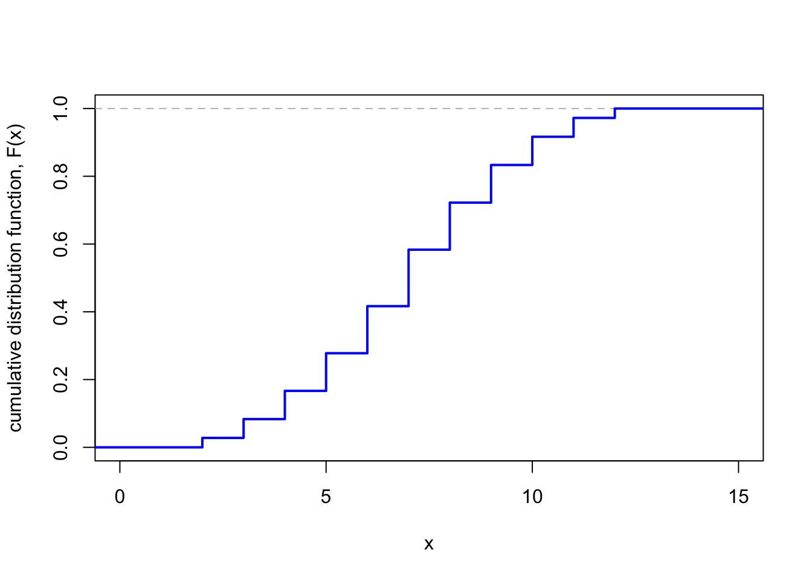

Section 5 Discrete random variables
5.1 What is a random variable?
Let’s consider again the case of rolling two dice. We know that the sample space is the set of pairs of numbers between 1 and 6 \[ \Omega = \big\{ \boldsymbol\omega = (\omega_1, \omega_2) : \omega_1, \omega_2 \in \{1,2,3,4,5,6\} \big\} , \] which is equipped with the classical probability measure \[ \mathbb P(A) = \frac{|A|}{36} . \]
But if we are rolling the two dice as part of a board game, we might only care about the total score on the two dice, rather than the two individual dice scores. In this case, we could write \(X\) for the score on the first dice plus the score on the second dice – that is, \[ X(\boldsymbol\omega) = \omega_1 + \omega_2 . \]
If we want to know the probability we roll a total of 7, say, then we could write this as \(\mathbb P(A)\) where \[ A = \{ \boldsymbol\omega : \omega_1 + \omega_2 = 7\} \] is the set of dice rolls with total 7. But it might just be easier to write this as \(\mathbb P(X = 7)\). We might also be interested in other things about the total score \(X\), like what the average total score is.
Here, \(X\) is an example of what we call a random variable. A random variable can be thought of as a numerical summary of an experiment (like the total summarising the two individual dice rolls). But by considering the random variable directly, it often means we don’t have to worry so much about exactly what the sample space is, or what probability measure is being used, or which sample outcomes are in a particular event. This often makes our life easier when thinking about probability problems.
Random variables are typically given capital letters from late in the alphabet, like \(X\), \(Y\), \(Z\). Values that those random variables take are often given lower-case letters, like \(x\), \(y\), \(z\).
The formal definition of a random variable is as a function that turns the outcome into this numerical summary.
Definition 5.1 Let \(\Omega\) be a sample space. Then a random variable is a function \(X\) from \(\Omega\) to the real numbers \(\mathbb R\); that is, to each sample outcome \(\omega\) it assigns a real number \(X(\omega)\).
Expressions like \(\mathbb P(X = x)\) should be understood as representing more formal probability \[ \mathbb P \big( \{\omega : X(\omega) = x \}\big) . \]
This formal definition of a random variable as a function was summarised by my own first-year probability lecturer as “There’s only two things you need to know about the definition of a random variable: first, it’s not random; second, it’s not a variable.”
However, the way we actually think about random variables is as random and is as variables. In this more informal way of thinking, a random variable is a variable that can take different values with different probabilities – just as the total of the two dice can be 2 with probability \(\frac{1}{36}\), or the value 3 with probability \(\frac{2}{36}\), and so on.
Definition 5.2 The set of values a random variable \(X\) can take is called its range, \(\operatorname{Range}(X) = \{X(\omega) : \omega \in \Omega \}\).
So, for example, the range of the dice sum \(X\) is \(\operatorname{Range}(X) = \{2, 3, \dots, 12\}\).
Random variables that we will consider in this module will be one of two types:
- Discrete random variables have a range that is finite (like the dice total being an integer between 2 and 12) or countably infinite (like the positive integers, for example). Discrete random variables can be used as models for “count data”.
- Continuous random variables have a range that is uncountably infinite (like the real numbers, the positive real numbers, or the interval \([0,1]\), for example). Continuous random variables can be used as models for “measurement data”.
In this section and the next two, we will look at discrete random variables; later in Section 8 and 9 we will look at continuous random variables.
5.2 Probability mass functions
We now consider only discrete random variables \(X\), where the range \(\operatorname{Range}(X)\) is a finite or countably infinite set. In this case, Axiom 3 tells us that for any set \(A\), we have \[ \mathbb P(X \in A) = \sum_{x \in A} \mathbb P(X = x) . \] (Recall that the symbol \(\in\) means “is an element of”, or just “is in” for short.) So to fully understand a discrete random variable \(X\), we need only understand the probabilities \(\mathbb P(X = x)\). These are captured by the probability mass function.
Definition 5.3 For a discrete random variable \(X\), its probability mass function (or PMF) is the function \(p_X\) where \[ p_X(x) = \mathbb P(X = x) \qquad \text{for $x \in \operatorname{Range}(X)$.} \] (When the random variable is obvious from context, we’ll just write \(p(x)\) without the subscript.)
The key is that, once we are thinking in terms of a random variable via its PMF, we can (usually) stop worrying to much about what the underlying sample space is and how the random variable acts on that space.
Example 5.1 Let \(X\) being the sum of two dice rolls. As this is a classical probability problem, the probability \(p(x)\) of rolling a total of \(x\) is \(n(x) / 36\), where \(n(x)\) is the number of ways of rolling a total of \(x\). So, for example, there is only one way \((1,1)\) of rolling a total of 2, so \(p(2) = \frac1{36}\), but there are 5 ways of rolling a 6: \((1,5), (2,4), (3, 3), (4, 2), (5, 1)\); so \(p(5) = \frac5{36}\).
The PMF \(p\) of \(X\) is given by
| \(x\) | \(2\) | \(3\) | \(4\) | \(5\) | \(6\) | \(7\) |
|---|---|---|---|---|---|---|
| \(p(x)\) | \(\frac{1}{36}\) | \(\frac{2}{36}\) | \(\frac{3}{36}\) | \(\frac{4}{36}\) | \(\frac{5}{36}\) | \(\frac{6}{36}\) |
| \(x\) | \(\cdots\) | \(8\) | \(9\) | \(10\) | \(11\) | \(12\) |
|---|---|---|---|---|---|---|
| \(p(x)\) | \(\cdots\) | \(\frac{5}{36}\) | \(\frac{4}{36}\) | \(\frac{3}{36}\) | \(\frac{2}{36}\) | \(\frac{1}{36}\) |

Example 5.2 Consider tossing a biased coin, that is Heads with probability \(p\) and Tails with probability \(1-p\). Let \(X = 1\) if the coin lands Heads, and \(X = 0\) if the coin lands Tails. The PMF \(p_X\) of this random variable is given by \[ p_X(0) = 1 - p \qquad p_X(1) = p . \]
We could alternatively think of the same random variable as representing the result of an experiment, where \(X = 1\) represents a success, with probability \(p_X(1) = p\), and \(X = 0\) represents a failure, with probability \(p_X(0) = 1 - p\).
A random variable \(X\) with this PMF is called a Bernoulli trial (or a “Bernoulli random variable”, or is said to “follow the Bernoulli distribution” – after the seventeenth-century Swiss mathematician Jacob Bernoulli). We use the notation \(X \sim \text{Bern}(p)\) for short.
Note that since \(p(x) = \mathbb P(X = x)\) is a probability, we must have \(p(x) \geq 0\) for all \(x \in \operatorname{Range}(X)\). Further, we have \[ 1 = \mathbb P(\Omega) = \mathbb P\big(X \in \operatorname{Range}(X)\big) = \sum_{x \in \operatorname{Range}(X)} \mathbb P(X = x) = \sum_{x \in \operatorname{Range}(X)} p(x) . \] Hence we have the following:
Theorem 5.1 Let \(X\) be a discrete random variable, and let \(p_X\) be its PMF. Then
- \(p_X(x) \geq 0\) for all \(x\);
- \({\displaystyle \sum_x p_X(x) = 1}\).
Sometimes it is useful to know the probability a random variable \(X\) is less than some value \(x\). This is captured by the cumulative distribution function (or CDF) \(F_X\), where \[ F_X(x) = \mathbb P(X \leq x) = \sum_{y \leq x} p_X(y) \qquad \text{for $x \in \mathbb R$.} \]
Example 5.3 Let \(X \sim \text{Bern}(p)\) be a Bernoulli random variable with success probability \(p\). Then its CDF \(F\) is \[ F(x) = \begin{cases} 0 & \text{for $x < 0$} \\ 1-p & \text{for $0 \leq x < 1$} \\ 1 & \text{for $x \geq 1$} . \end{cases} \]
Example 5.4 If \(X\) is the sum of two dice rolls, then the CDF \(F\) is given by
| \(x \in {}\) | \((-\infty, 2)\) | \([2,3)\) | \([3,4)\) | \([4,5)\) | \(\cdots\) | \([11,12)\) | \([12, \infty)\) |
|---|---|---|---|---|---|---|---|
| \(F(x)\) | \(0\) | \(\frac{1}{36}\) | \(\frac{3}{36}\) | \(\frac{5}{36}\) | \(\cdots\) | \(\frac{35}{36}\) | \(1\) |

Note that the CDF is a “step function” that starts at 0, then jumps up suddenly at each of the values \(2, 3, \dots, 12\), ending up at 1.
For any random variable \(X\) with CDF \(F\),
- if \(x\) is smaller than everything in the range of \(X\), then \(F(x) = 0\);
- if \(x\) is greater than everything in the range of \(X\), then \(F(x) = 1\);
- \(F(x)\) is increasing in \(x\).
5.3 Expectation
Often, we will be interested in the “average” value of a random variable – for example, the average total from two dice rolls – which represents what “central” values of the random variable. This average is called the “expectation”.
Definition 5.4 Let \(\Omega\) be a finite or countably infinite sample space, \(\mathbb P\) be a probability measure on \(\Omega\), and \(X\) be a discrete random variable on \(\Omega\). Then the expectation (or expected value) of \(X\) is \[ \mathbb EX = \sum_{\omega \in \Omega} X(\omega) \mathbb P(\{\omega\}) . \] If \(p\) is the PMF of \(X\), then a more convenient formula is \[ \mathbb EX = \sum_{x \in \operatorname{Range}(X)} x\,p_X(x) . \]
We get the second formula from the first by grouping together all outcomes \(\omega\) that lead to the same value \(x = X(\omega)\) of \(X\).
Note that “expectation” is simply the name that mathematicians give to the value \(\mathbb EX = \sum_x x\, p(x)\). We don’t necessarily “expect” to get the value \(\mathbb EX\) as the outcome in the normal English-language sense of the word “expect”. (Indeed, you might like to check that the expectation of a single dice roll is 3.5, but you certainly don’t “expect” to get the number 3.5 in a single roll of the dice!) We will see later that the the expectation can be interpreted as a sort of “long-run mean outcome”.
Example 5.5 Let \(X \sim \text{Bern}(p)\) be a Bernoulli trial with success probability \(p\). What is the expectation \(\mathbb EX\)?
Using the second formula in the definition, we have \[ \mathbb EX = \sum_{x} x\,p(x) = 0\times (1-p) + 1\times p = p. \]
Example 5.6 When \(X\) is the total of two dice rolls, the expectation is \[\begin{align*} \mathbb EX &= \sum_{x \in \operatorname{Range}(X)} x\,p(x) \\ &= 2 \times \tfrac{1}{36} + 3 \times \tfrac{2}{36} + \cdots + 12 \times \tfrac{1}{36} \\ &= \tfrac{252}{36} \\ &= 7 . \end{align*}\]
5.4 Functions of random variables
In previous examples, we looked at \(X\) being the total of the dice rolls. But we could equally well chosen to have looked at a different random variable that is a function of that total \(X\), like “double the total and add 1” \(Y = 2X + 1\), or “the total minus 4, all squared” \(Z = (X-4)^2\). (I’m not sure why you’d care about these, but you could study them if you wanted to…)
Example 5.7 Let \(Y = 2X - 1\). Then for each potential outcome \(x\) of \(X\), there is a matching outcome \(y = 2x - 1\) of \(Y\). So we can find the PMF for \(Y\) by keeping the same probabilities as for \(X\), but changing the values \(x\) to the values \(y = 2x -1\).
| \(y\) | \(3\) | \(5\) | \(7\) | \(\cdots\) | \(21\) | \(23\) |
|---|---|---|---|---|---|---|
| \(p_Y(y)\) | \(\frac{1}{36}\) | \(\frac{2}{36}\) | \(\frac{3}{36}\) | \(\cdots\) | \(\frac{2}{36}\) | \(\frac{1}{36}\) |
Example 5.8 What about \(Z = (X - 4)^2\)? This is a bit trickier, because more than one outcome \(x\) can lead to the same outcome \(z = (x - 4)^2\): for example, \((2 - 4)^2 = (6 - 4)^2 = 4\). So, more precisely, we have \[ \mathbb P(Z = z) = \mathbb P\big(X \in \{x : (x - 4)^2 = z\}\big) , \] or, in terms of PMFs, \[ p_Z(z) = \sum_{x : (x - 4)^2 = z} p_X(x) . \]
| \(z\) | \(0\) | \(1\) | \(4\) | \(\cdots\) | \(49\) | \(64\) |
|---|---|---|---|---|---|---|
| \(p_Z(z)\) | \(\frac{3}{36}\) | \(\frac{2}{36} + \frac{4}{36} = \frac{6}{36}\) | \(\frac{1}{36} + \frac{5}{36} = \frac{6}{36}\) | \(\cdots\) | \(\frac{2}{36}\) | \(\frac{1}{36}\) |
So if we wanted to find the expectation of a function of a random variable, we could first find the PMF, like in the above examples, and then use that PMF to find the expectation. But there is a quicker way.
Theorem 5.2 (Law of the unconscious statistician) Let \(X\) be a random variable, and let \(Y = g(X)\) be another random variable that is a function of \(X\). Then \[ \mathbb EY = \mathbb Eg(X) = \sum_{x} g(x) \, p_X(x) . \]
(The rather cruel name of this theorem is, I think, because this is the formula you might carelessly write down for \(\mathbb Eg(X)\) if you weren’t thinking carefully – but it turns out it’s correct!)
Proof. As in the previous example, the idea is to group together \(x\)s that give the same \(y\).
From the definition of expectation, we have \[ \mathbb EY = \sum_y y\, p_Y(y) . \] Then using \[ p_Y(y) = \sum_{x : g(x) = y} p_X(x) , \] we get \[\begin{align*} \mathbb EY &= \sum_y y \sum_{x : g(x) = y} p_X(x) \\ &= \sum_y \sum_{x : g(x) = y} y\,p_X(x) \\ &= \sum_y \sum_{x : g(x) = y} g(x) \, p_X(x) , \end{align*}\] since \(y = g(x)\) inside the second sum. But those two sums together are summing over all \(x\), just partitioned by which value of \(y\) they lead to, so can be replaced by a single sum over \(x\). That gives the theorem.
There are some functions for which this expression becomes particularly simple.
Theorem 5.3 (Linearity of expectation, 1) Let \(X\) be a random variable. Then
- \(\mathbb E(aX) = a\mathbb EX\);
- \(\mathbb E(X + b) = \mathbb EX + b\).
Proof. We use the law of the unconscious statistician.
For part 1, we can take the \(a\) outside the sum, to get \[ \mathbb E(aX) = \sum_x ax\, p_X(x) = a\sum_x x\, p_X(x) = a\mathbb EX . \]
For part 2, we have \[\begin{align*} \mathbb E(X+b) &= \sum_x (x + b)\, p_X(x) \\ &= \sum_x \big( x\, p_X(x) + b\,p_X(x) \big) \\ &= \sum_x x\, p_X(x) + \sum_x b\,p_X(x) \\ &= \mathbb E(X) + b \sum_x p_X(x) \\ &= \mathbb E(X) + b . \end{align*}\] The last line was because PMFs always add up to 1, so \(\sum_x p_X(x) = 1\).
So for our “double the dice total and add 1” random variable \(Y = 2X - 1\), we have \[ \mathbb EY = \mathbb E(2X+1) = 2\mathbb EX + 1 = 2\times 7 + 1 = 15. \]
5.5 Variance
In the same way as the expectation of a random variable tells us about central typical values of it, the variance of a random variable tells us about the spread of typical values.
Definition 5.5 Let \(X\) be a random variable with expectation \(\mathbb EX = \mu\). Then the variance of \(X\) is \[ \operatorname{Var}(X) = \mathbb E(X - \mu)^2 . \]
(To be clear, the notation there means the expectation of \((X-\mu)^2\); and not \(\mathbb E(X - \mu)\) squared, which would be \(0^2 = 0\).)
Note that \((X - \mu)^2\) is a square, so always non-negative, and hence the variance is always non-negative also.
It may not surprise you, if you remember Section 1 that to go along with that definitional formula for the variance, we also have a computational formula.
Theorem 5.4 Let \(X\) be a random variable with expectation \(\mathbb EX = \mu\). Then the variance \(\operatorname{Var}(X) = \mathbb E(X - \mu)^2\) can also be calculated as \[ \operatorname{Var}(X) = \mathbb EX^2 - \mu^2 . \]
(Again, \(\mathbb EX^2\) means the expectation of \(X^2\).)
Proof. As previously we expand out the brackets, and use linearity of expectation (in the same way we “brought the sum inside” previously). We get \[\begin{align*} \operatorname{Var}(X) &= \mathbb E(X - \mu)^2 \\ &= \mathbb E(X^2 - 2\mu X + \mu^2) \\ &= \mathbb EX^2 - \mathbb E(2\mu X) + \mathbb E \mu^2 \\ &= \mathbb EX^2 - 2\mu \,\mathbb EX + \mu^2 . \end{align*}\] But we said that \(\mathbb EX\) would be called \(\mu\), so we can substitute in \(\mathbb EX = \mu\), to get \[ \operatorname{Var}(X) = \mathbb E X^2 - 2\mu^2 + \mu^2 = \mathbb E X^2 - \mu^2 , \] as required.
Example 5.9 Let \(X \sim \text{Bern}(p)\) be a Bernoulli trial, and recall that \(\mathbb EX = p\).
Using the definitional formula, we have \[\begin{align*} \operatorname{Var}(X) &= \mathbb E(X-p)^2 \\ &= (0 - p)^2 \,p_X(0) + (1-p)^2\, p_X(1) \\ &= p^2\times(1-p) + (1-p)^2 \times p \\ &= p(1-p)\big(p + (1-p)\big) \\ &= p(1-p) . \end{align*}\]
Alternatively, using the computational formula, we have \[\begin{align*} \operatorname{Var}(X) &= \mathbb EX^2 - p^2 \\ &= \big(0^2\,p_X(0) + 1^2 p_X(1)\big) - p^2 \\ &= 0\times(1-p) + 1\times p - p^2 \\ &= p - p^2 \\ &= p(1-p) . \end{align*}\]
Example 5.10 For the total of two dice, using the computational formula, we have \[\begin{align*} \operatorname{Var}(X) &= \mathbb EX^2 - \mu^2 \\ &= \left(2^2 \times \frac{1}{36} + 3^2 \times \frac{2}{36} + \cdots + 12^2 \times \frac{1}{36}\right) - 7^2 \\ &= \frac{1974}{36} - 49 \\ &= \frac{70}{12} \approx 5.8 . \end{align*}\]
Finally, a result on what happens to the variance of simple functions of random variables.
Theorem 5.5 Let \(X\) be a random variable. Then
- \(\operatorname{Var}(aX) = a^2\operatorname{Var}(X)\);
- \(\operatorname{Var}(X + b) = \operatorname{Var}(X)\).
You will prove this on the problem sheet.
Summary
- A random variable is a numerical summary of a random experiment.
- The probability mass function (PMF) is \(p_X(x) = \mathbb P(X = x)\), and the cumulative distribution function (CDF) is \(F_X(x) = \mathbb P(X \leq x)\).
- The expectation is \(\mathbb EX = \sum_x x\, p_X(x)\).
- The variance of a random variable with expectation \(\mu\) is \(\operatorname{Var}(X) = \mathbb E(X - \mu)^2\).
- \(\mathbb E(aX+b) = a\mathbb EX + b\) and \(\operatorname{Var}(aX+b) = a^2\operatorname{Var}(X)\).